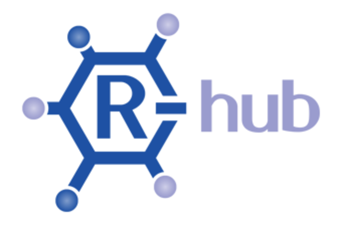
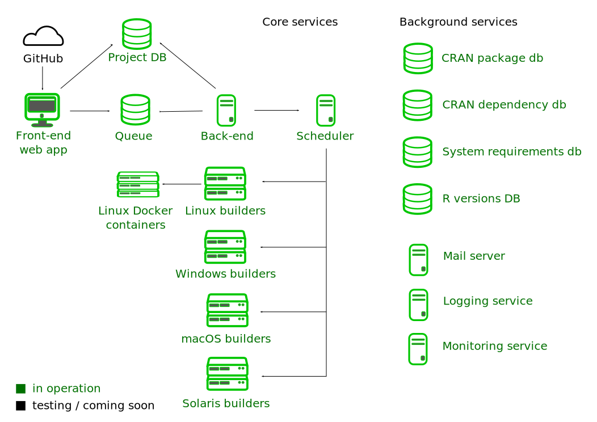

R-hub
Gábor Csárdi
csardi.gabor@gmail.com

Gábor Csárdi
csardi.gabor@gmail.com

The central mission of the R Consortium is to work with and provide support to the R Foundation and to the key organizations developing, maintaining, distributing and using R software through the identification, development and implementation of infrastructure projects.
Members:
· R Foundation · IBM · Microsoft · Gordon and Betty Moore Foundation · RStudio · Tibco · Alteryx · DataCamp · esri · Google · Mango Solutions · Oracle · ProCogia
Web submission, email notification, https://builder.r-hub.io
API, R package client, https://github.com/r-hub/rhub
Multi-platform: Linux, Windows, macOS, Solaris
Flexible dependency support
Binary packages
Private and secure (usual disclaimer applies)

platforms()validate_email()
list_validated_emails()check()
check_for_cran()
check_*()
check(email = ...)cx <- last_check()
cx <- list_my_checks()
cx <- list_my_checks(package = ...)
cx$details()
cx$livelog()
cx$web()Docker image list: https://hub.docker.com/u/rhub/
Get the container:
docker pull rhub/fedora-clang-develRun it:
docker run -ti rhub/fedora-clang-devel bashGet the R package, dependencies:
## In the container:
dnf install git openssl-devel libxml2-devel
git clone https://github.com/rladies/praise.git
cd praise
echo 'options(repos=c(CRAN="https://cloud.r-project.org"))' > ~/.Rprofile
/opt/R-devel/bin/R -e 'install.packages("devtools")'
/opt/R-devel/bin/R -e 'devtools::install_dev_deps()'
## Quit, and docker commit ...Run package check:
/opt/R-devel/bin/R -e 'devtools::check()'Remotes field in DESCRIPTIONPackage: revdepcheck
Title: Automated Reverse Dependency Checking
[...]
Imports:
assertthat,
callr,
[...]
progress,
yaml
Remotes:
r-lib/callr,
r-lib/progress,
[...]SystemRequirements field{
"libjq": {
"sysreqs": "libjq",
"platforms": {
"DEB": "libjq-dev",
"RPM": "jq-devel",
"OSX/brew": "jq"
}
}
}{
"protobuf3": {
"sysreqs": [ "protobuf3" ],
"platforms": {
"DEB": { "script": "protobuf-installer.sh" },
"RPM": { "script": "protobuf-installer.sh" },
"OSX/brew": "protobuf"
}
}
}rhub::check_with_valgrind()rhub::check_with_sanitizers()PROTECT() errors: rhub::check(platform = "ubuntu-rchk")